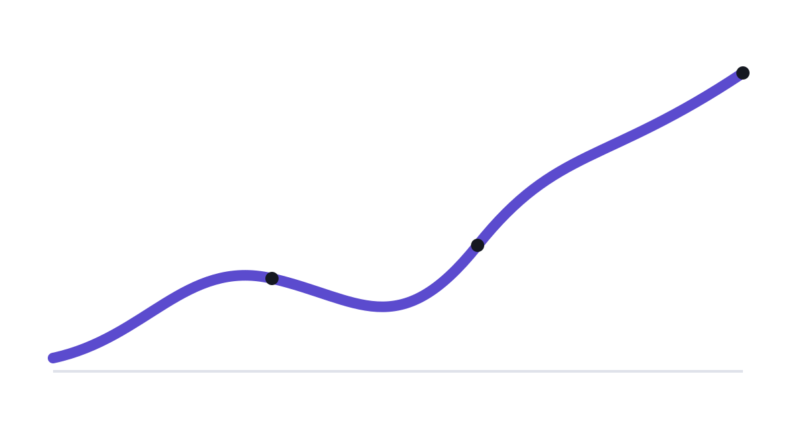

PERFORMANCE-FIRST UI
Fast interfaces feel effortless.
A lightweight dashboard demonstrating practical frontend performance optimization without sacrificing usability or visual quality.
LIVE DEMO
Core metrics
OPTIMIZATION
What changed
Smaller payload
CSS and JavaScript are minified, while decorative graphics use compact SVG instead of heavy raster images.
Deferred execution
The interactive script uses defer, keeping HTML parsing and first paint free from blocking JavaScript.
Lazy media
Below-the-fold imagery is loaded lazily with explicit dimensions to reduce network work and layout shifts.
Lean DOM
The page uses semantic sections and a small number of elements, reducing styling and scripting overhead.
